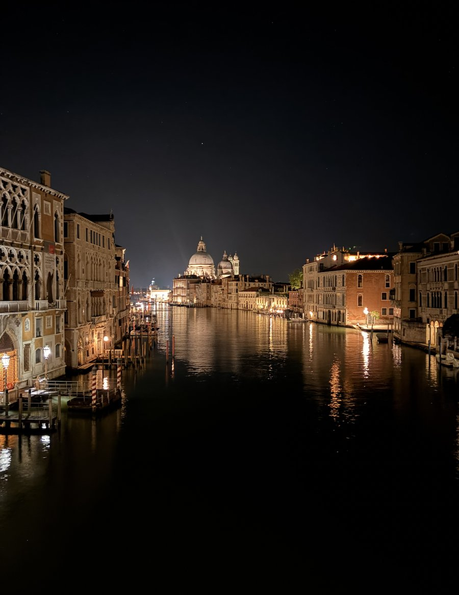
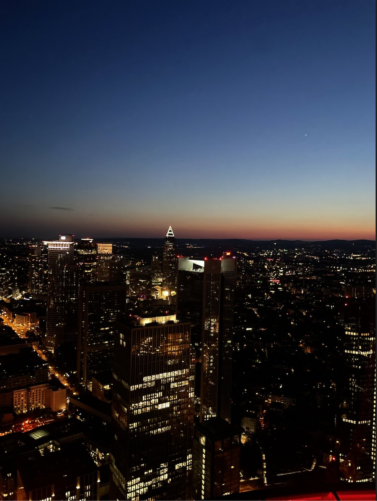

Ce qui m’anime en dehors des études
Le sport
Le sport a une grande place dans ma vie, que ce soit en pleine nature ou entre quatre murs. Il me permet de m’évader, de me dépasser et de repousser mes limites. Au-delà de l’activité physique, j’y trouve un moyen de me vider l’esprit, de relever de nouveaux défis et de progresser à mon rythme. C’est aussi une façon de cultiver des valeurs qui me tiennent à cœur, comme la discipline, la persévérance et la détermination, des qualités que j’essaie également d’appliquer dans mes études et mes projets professionnels.
La musique
La musique occupe une place importante dans mon quotidien. C’est pour moi un moyen de m’évader, de découvrir de nouveaux univers et d’exprimer des émotions différentes. J’aime explorer plusieurs styles musicaux et découvrir de nouveaux artistes. Que ce soit pour me motiver, me détendre ou simplement profiter de l’instant, la musique m’accompagne dans de nombreux moments de ma vie.
Le voyage
Voyager représente pour moi une occasion de découvrir le monde, de sortir de ma zone de confort et de m’ouvrir à de nouvelles cultures. J’aime l’idée de partir à la découverte de lieux inconnus, de rencontrer des personnes différentes et de vivre des expériences qui sortent du quotidien. Au-delà des paysages, chaque voyage est une opportunité d’apprendre, de gagner en autonomie et de développer ma curiosité, des qualités qui me semblent tout aussi importantes dans ma vie personnelle que professionnelle.

